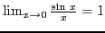

Next:
Contents
Contents
Index
[] []
Differential Calculus and
SAGE
(revised edition)
William Anthony Granville,
with extra material added by David Joyner
Date:
8-10-2008
Contents
Contents
Preface
Collection of formulas
Formulas for reference
Greek alphabet
Rules for signs of the trigonometric functions
Natural values of the trigonometric functions
Logarithms of numbers and trigonometric functions
Variables and functions
Variables and constants
Interval of a variable.
Continuous variation.
Functions.
Independent and dependent variables.
Notation of functions
Values of the independent variable for which a function is defined
Exercises
Theory of limits
Limit of a variable
Division by zero excluded
Infinitesimals
The concept of infinity (
)
Limiting value of a function
Continuous and discontinuous functions
Continuity and discontinuity of functions illustrated by their graphs
Fundamental theorems on limits
Special limiting values
Show that

The number
Expressions assuming the form
Exercises
Differentiation
Introduction
Increments
Comparison of increments
Derivative of a function of one variable
Symbols for derivatives
Differentiable functions
General rule for differentiation
Exercises
Applications of the derivative to Geometry
Exercises
Rules for differentiating standard elementary forms
Importance of General Rule
Differentiation of a constant
Differentiation of a variable with respect to itself
Differentiation of a sum
Differentiation of the product of a constant and a function
Differentiation of the product of two functions
Differentiation of the product of any finite number of functions
Differentiation of a function with a constant exponent
Differentiation of a quotient
Examples
Differentiation of a function of a function
Differentiation of inverse functions
Differentiation of a logarithm
Differentiation of the simple exponential function
Differentiation of the general exponential function
Logarithmic differentiation
Examples
Differentiation of
Differentiation of
Differentiation of
Differentiation of
Differentiation of
Differentiation of
Differentiation of
Exercises
Differentiation of
Differentiation of
Differentiation of
Differentiation of
Differentiation of
Differentiation of
Differentiation of
Example
Implicit functions
Differentiation of implicit functions
Exercises
Miscellaneous Exercises
Simple applications of the derivative
Direction of a curve
Exercises
Equations of tangent and normal lines
Exercises
Parametric equations of a curve
Exercises
Angle between the radius vector and tangent
Lengths of polar subtangent and polar subnormal
Examples
Solution of equations having multiple roots
Examples
Applications of the derivative in mechanics
Component velocities. Curvilinear motion.
Acceleration. Rectilinear motion.
Component accelerations. Curvilinear motion.
Examples
Application: Newton's method
Description of the method
Analysis
Fractals
Successive differentiation
Definition of successive derivatives
Notation
The
-th derivative
Leibnitz's Formula for the
-th derivative of a product
Successive differentiation of implicit functions
Exercises
Maxima, minima and inflection points.
Introduction
Increasing and decreasing functions
Tests for determining when a function is increasing or decreasing
Maximum and minimum values of a function
Examining a function for extremal values: first method
Examining a function for extremal values: second method
Problems
Points of inflection
Examples
Curve tracing
Exercises
Differentials
Introduction
Definitions
Infinitesimals
Derivative of the arc in rectangular coordinates
Derivative of the arc in polar coordinates
Exercises
Formulas for finding the differentials of functions
Successive differentials
Examples
Rates
The derivative considered as the ratio of two rates
Exercises
Change of variable
Interchange of dependent and independent variables
Change of the dependent variable
Change of the independent variable
Simultaneous change of both independent and dependent variables
Exercises
Curvature; radius of curvature
Curvature
Curvature of a circle
Curvature at a point
Formulas for curvature
Radius of curvature
Circle of curvature
Exercises
Theorem of mean value; indeterminant forms
Rolle's Theorem
The Mean-value Theorem
The Extended Mean Value Theorem
Exercises
Maxima and minima treated analytically
Exercises
Indeterminate forms
Evaluation of a function taking on an indeterminate form
Evaluation of the indeterminate form
Rule for evaluating the indeterminate form
Exercises
Evaluation of the indeterminate form
Evaluation of the indeterminate form
Evaluation of the indeterminate form
Exercises
Evaluation of the indeterminate forms
,
,
Exercises
Application: Using Taylor's Theorem to Approximate Functions.
Example/Application: Finite Difference Schemes
Circle of curvature. Center of Curvature.
Circle of curvature
Second method for finding center of curvature
Center of curvature
Evolutes
Properties of the evolute
Exercises
References
Bibliography
Index
david joyner 2008-08-11